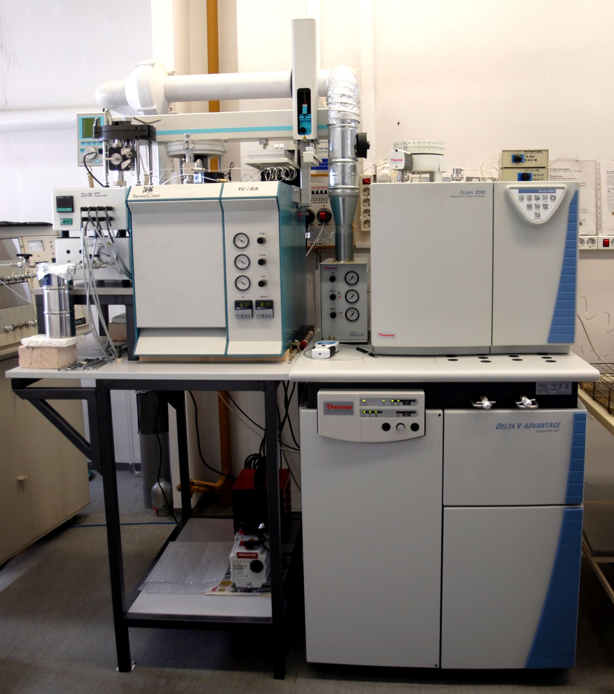
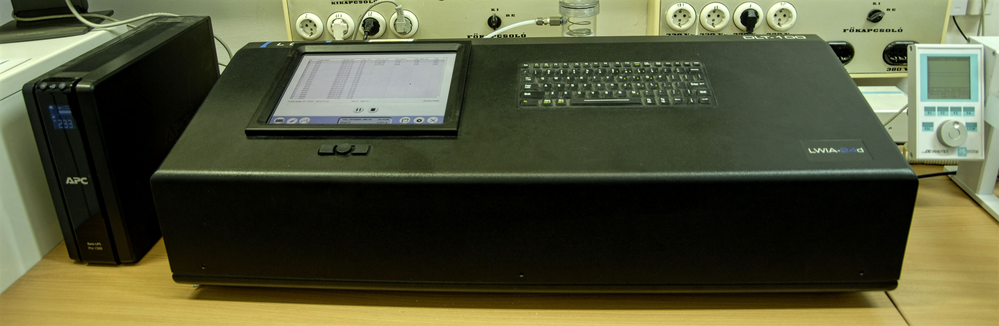

Kutatók
- Demény Attila (az MTA rendes tagja, csoportvezető)
- Czuppon György (PhD)
- Fórizs István (PhD)
- Kele Sándor (PhD)
- Gugora Ariana (PhD hallgató)
Technikusok
- Hegyi István, vegyész mérnök
Cím
A stabilizotóp laboratórium 1990-ben alakult meg az akkori igazgató, Pantó György akadémikus által elnyert OTKA műszerpályázati támogatás révén. A kiépítésben és a működtetésben két kutató vett részt, Demény Attila (geológus, izotópgeokémia) és Fórizs István (fizikus, izotóphidrológia). A laboratórium alapját 2005-ig egy Finnigan MAT delta S típusú stabilizotóparány-mérő tömegspektrométer alkotta. A tömegspektrométer két kollektor-rendszerrel rendelkezik, az egyik a 13C/12C, 18O/16O, 15N/14N és 34S/32S arányok CO2, N2 és SO2 gázokban, a másik a D/H arány H2 gázban történő meghatározását biztosítja. 2005-ben egy GVOP projekt (GVOP-3.2.1-2004-04-0235/3.0) keretében történt meg egy Finnigan delta plus XP vivőgázas tömegspektrométer beszerzése és üzembe helyezése. A vivőgázas tömegspektrométerrel szintén a H, C, O, N és S elemek izotóparányait lehet meghatározni, de a korábbi, dual-inlet rendszerrel szemben sokkal kisebb, mikromólt elérő anyagmennyiségből. 2014-2015-ben a laboratórium újabb berendezéssel bővült. Egy Thermo Finnigan delta V tömegspektrométert helyeztünk üzembe, amihez ásványok és szerves anyagok automatizált H-C-N-O izotópelemzésére alkalmas TC/EA és elemanalizátor berendezést csatoltunk. A tömegspektrométerek mellett két lézer spektroszkóp üzemel az egységben, amivel vízminták és ásványokból felszabadított H2O kombinált H-O izotópelemzését végezzük.
A stabilizotóparányokat a következő típusú anyagokban tudjuk meghatározni
Víz. Nagy sótartalom esetén a vízminták oxigénizotóp-elemzését egy "on-line" (tömegspektrométerhez csatolt) automata gáz-H2O egyensúlyi rendszer segítségével végezzük (Roether 1970). Kis sótartalmú és szervesanyag-mentes minták esetében az elemzések lézer spektrométerrel történnek.
Karbonátok. A karbonátok (kalcit,dolomit, ankerit, sziderit, magnezit) elemzése vízmentes foszforsavval való reagáltatással és a CO2 gáz elemzésével történik. A "hagyományos" dual-inlet rendszerű tömegspektrométerrel történő elemzéskor a berendezéstől elkülönített ("off-line") vákuumrendszert használunk a feltáráshoz, a vivőgázas, delta plus XP tömegspektrométer esetén a berendezéshez csatolt ("on-line") automatikus feltáró készülékkel végezzük a vizsgálatokat. A mintaigény 1-100 mikromól karbonát.
Szerves anyag. A szerves anyagok elemzésére két fő módszert alkalmazunk. 1) A szerves anyagot CuO-val oxidáljuk kb. 500 °C hőmérsékleten. A mintát a CuO-val összekeverve pyrex üvegcsőbe helyezzük, vákuumra szívatjuk, majd lánggal lezárva reagáltatjuk. A keletkező H2O-t és CO2-t vákuumdesztillálással választjuk szét, majd a CO2-ben, illetve a H2O-ból fejlesztett H2 gázban határozzuk meg a δ13C és δD értékeket. 2) Automata üzemmódban tömegspektrométerhez csatolt elemanalizátorral és TC/EA készülékkel történik a szerves anyagok H-C-N-O izotópelemzése.
Fluidumzárványok. A zárványfluidumokat hődekrepitációval, illetve - H tartalmú szennyező jelenlétében - vákuumban történő töréssel szabadítjuk fel, a vákuumdesztillálással kinyert vizet lézer spektrométerrel elemezzük.
Levegő CO2-tartalma. A levegő CO2-tartalmát általában cseppfolyós nitrogén hőmérsékletén történő kifagyasztással elemzik, azonban ekkor a CO2-vel egyező molekulatömegű N2O is kifagy, ami látszólagos izotópösszetételt eredményez a tömegspektrométeres mérés során. Ezt az eltérést hagyományosan korrekcióval szokás kiküszöbölni. Egy másik módszer szerint a CO2-t és az N2O-t gázkromatográf segítségével választjuk szét. Miután egy AKP projekt keretében szennyezett - és így változó mennyiségű, eredetű és izotópösszetételű N2O-t tartalmazó - városi levegő elemzését végeztük, a laboratóriumban a gázkromatográfos elválasztás lehetőségét teremtettük meg.
Kutatási területek
-
Izotópgeológia (Demény Attila)
- A felső köpeny izotópgeokémiája (Kanári-szigetek, Pannon-medence, karbonatitok)
- Kihalási események izotópgeokémiája (dr. Pálfy Józseffel közös projekt)
-
Izotóphidrológia (Fórizs István)
- Vízbázisvédelem
- A Duna idősoros elemzése
- Barlangi vizek és hévizek
- Levegő széndioxid-tartalma (Demény Attila). 1998-1999: AKP projekt, 2000-2003: az Országos Meteorológiai Szolgálattal (dr. Haszpra László) és a Groningeni Egyetemmel közös NWO-OTKA projekt.
- Cseppkövek (Demény Attila, Czuppon György), édesvízi mészkövek (Kele Sándor) izotópgeokémiája.
- Stabilizotóp-geokémia módszereket a talaj-geokémiai vizsgálatokban is hasznosítunk (Bajnóczi Bernadett).
- A fentieket részben összefogó kiemelt kutatási irányvonal a paleoklimatológiai vizsgálatok területe, amelynek a Geokémiai Kutatóintézeten belüli koordinálására alakult meg a GEOKÉMIA & PALEOKLÍMA Kutatócsoport.